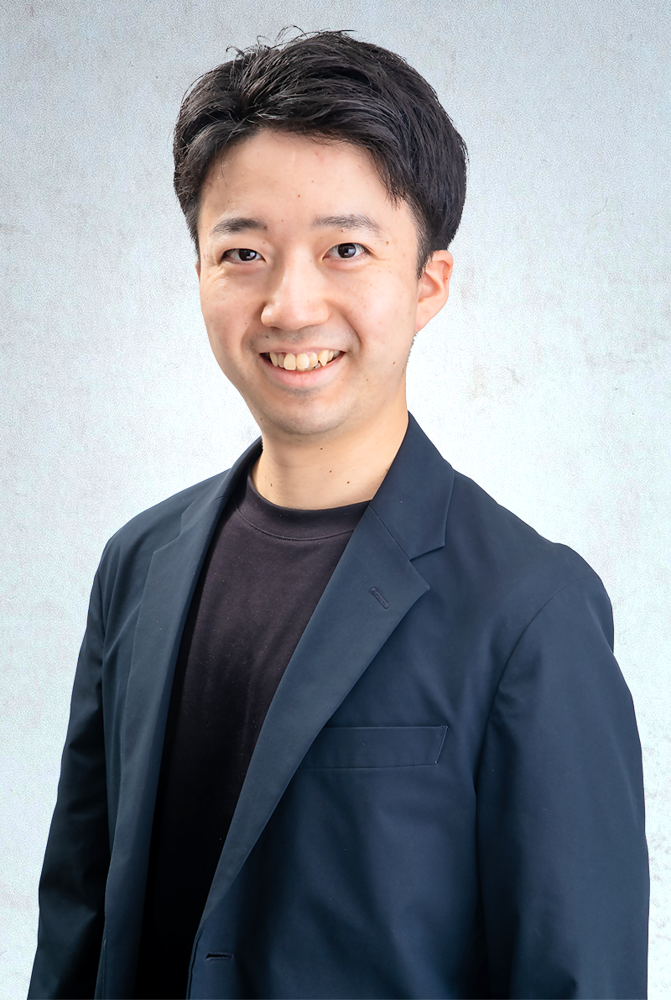

AIと人間の共存
AIに置き換えるのではなく、AIと組む。機械にできることは機械に委ね、人間は人間にしかできない問いと判断に集中する。その境界を、誠実に設計し続けます。
Coexistence人間の可能性を、解き放つ。
生成AIは、いま、一人ひとりの可能性を爆発的に広げつつあります。これまで一部の専門家にしか手の届かなかった知の領域が、すべての人に開かれようとしている。私たちは、この変化を「人間が機械に置き換わる物語」ではなく、「人間がもっと人間らしくなれる物語」として捉えています。
だからこそ、AIと人間の共存は、これからの社会に不可欠な前提です。AIに任せられることはAIに、人間にしかできないことに人間を。その境界を丁寧に設計し続けることが、私たちの仕事です。
才能は、一部の人だけのものではありません。環境や、出会いや、ほんの少しの道具がなかっただけで、まだ表に出ていない力が、世界には無数に眠っている。私たちは、AIという最良の相棒とともに、その一つひとつを起こしていきます。
より良い22世紀を創る。
To the 22nd Century
社名「To22」は、To the 22nd century ― 22世紀へ、という意志そのものです。私たちが見据えるのは、目の前の数年ではありません。100年先の社会に、どんな可能性を遺せるか。その問いを、すべての判断の真ん中に置いています。

眠っている才能を、
AIの力で解き放ちたい。
京都大学工学部を卒業後、パナソニックに新卒代表として入社。新規事業部門で、機械学習エンジニアから事業開発（Bizdev）まで幅広く担当しました。その後、ボストン・コンサルティング・グループ（BCG）へ。M&A戦略・DX戦略・成長戦略・新規事業・構造改革と、数多くのプロジェクトで立案から実行支援までを手がけてきました。
そして、To22を創業。事業開始2年目にして、すでに多数の大企業のコンサルティングをリードしています。テクノロジーの最前線と、経営の現場。その両方を歩いてきたからこそ、確信していることがあります。AIは、人の可能性を奪うものではない。広げるものだ。
もし、あなたが「自分にも、まだ起こしきれていない力がある」と感じているなら。私と一緒に、その力を解き放ちにいきませんか。
工学のバックグラウンドからキャリアをスタート。
新規事業部門にて、機械学習エンジニアから事業開発（Bizdev）まで幅広く担当。
M&A戦略・DX戦略・成長戦略・新規事業・構造改革 ── 数多くのプロジェクトの立案と実行支援をリード。
事業開始2年目で、多数の大企業に対するコンサルティングをリードしている。
AIに置き換えるのではなく、AIと組む。機械にできることは機械に委ね、人間は人間にしかできない問いと判断に集中する。その境界を、誠実に設計し続けます。
Coexistence才能は誰の中にも眠っています。道具や環境が足りなかっただけで埋もれている力を、AIという相棒の力で起こす。人の可能性を信じることが、私たちの出発点です。
Unlock Potential目先の成果ではなく、100年先の社会に何を遺せるか。To the 22nd century ― この長期の視点が、短期の判断を誤らせないための、私たちの羅針盤です。
Long Viewいま私たちが探しているのは、与えられた役割をこなす人ではありません。これからのTo22の骨格そのものを、一緒に描いてくれる人です。
「人間の可能性を解き放つ」という使命に、頭ではなく心から頷ける方。
AIを脅威でも魔法でもなく、日々となりに置く相棒として使いこなせる方。
個人の頑張りに頼らず、再現性のある仕組みで課題を解こうとする方。
目先の最適ではなく、100年先の社会から逆算して今を選べる方。
経歴書も、志望動機も、まだ要りません。
まず野間と、腹を割って話すところから。あなたの中に眠っている力と、私たちの目指す22世紀が、重なるかどうか。それを確かめる1時間にしましょう。